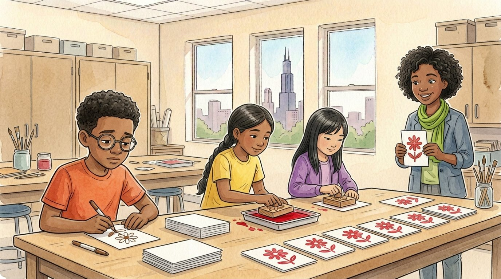

Grade 6 · Social studies · SS.6-8.EC.4
The card company
A story about a class business and the inventions of paper and printing in China.
La compañía de tarjetas. Un cuento sobre un negocio de la clase y la invención del papel y la imprenta en China.
Key words you will learn
Tap a green word to see what it means.
Toca una palabra verde para ver qué significa. Con la ayuda activada, verás también la definición en español.
The story
El cuento está en inglés. Pulsa «Listen to the story» para escucharlo y toca las palabras verdes cuando no entiendas una.
The sixth grade decided to raise money for a field trip by selling greeting cards at the winter fair. "I'll be the boss," said Daniel. "Every card will be a masterpiece." He drew the first card by hand: a flower, very carefully. It took him twenty minutes. "We need 200 cards," said Salma. Daniel looked at the clock and groaned.
"You need an ," said Ms. Haddad. "A better way of doing the work." She told them about China, long ago. "Around the year 105, an official named Cai Lun improved a way of making paper from tree bark, old rags and fishing nets. Before that, people wrote on bamboo strips, which were heavy, or on silk, which was very expensive."
"Paper was cheap and light," she said. "More people could write letters, keep records and read books." Then she held up a block of wood with a flower carved into it, backward. "Next, Chinese printers invented . They carved a whole page into a wooden block, covered it with ink and pressed paper on top. One block could print hundreds of copies."
Salma and Sophia tried it. Press, stamp, lift. Press, stamp, lift. In twenty minutes, they made forty cards, while Daniel finished his second masterpiece. "That's ," said Ms. Haddad. "The same number of people, in the same time, making many more products."
"There's a problem," said Sophia. "What if we want to print a different message on each card? We'd have to carve a new block every time." Ms. Haddad smiled. "A man named Bi Sheng had the same thought around the year 1040. He made : little clay pieces, each with one character. Printers could arrange them into any page, print it, then take them apart and use them again." About 400 years later, Johannes Gutenberg built a printing press with metal movable type in Germany, and books spread across Europe.
Daniel crossed his arms. "But my hand-drawn cards are better." "Maybe some people will pay more for them," said Ms. Haddad. "That's a real business choice." "An decides what to make, how to make it and what to charge. Printing lowers the of each card, so you can sell more cards for less money. Special hand-drawn cards can sell for more."
So the class made a plan: 190 printed cards at one dollar each, and ten of Daniel's hand-drawn cards at three dollars each, signed by the artist. At the winter fair, the printed cards sold out by noon. Daniel's cards sold out too, but it took the whole day.
They earned 220 dollars, enough for the field trip. On the way home, Daniel said, "Cai Lun and Bi Sheng should get a thank-you card." "From your company?" asked Salma. "Printed," said Daniel. "Not hand-drawn. I'm tired."
Pause to connect
Visual arts · VA:Cn11.1.6
Look at the Diamond Sutra, a Buddhist book printed in China in the year 868 with woodblocks. It is the oldest printed book we know of that has an exact date.
Observa el Sutra del Diamante, un libro budista impreso en China en el año 868 con bloques de madera. Es el libro impreso más antiguo que conocemos con una fecha exacta.
Learn about the Diamond Sutra (University of Oxford) (opens in a new tab)
What you will see: The book is a long scroll, more than five meters long. At the start is a printed picture: the Buddha sits in the center under a decorated canopy, teaching an old follower who kneels in front of him, surrounded by many other figures.
Lo que verás: El libro es un rollo largo, de más de cinco metros. Al principio hay un dibujo impreso: el Buda está sentado en el centro bajo un dosel decorado y enseña a un seguidor anciano que está arrodillado frente a él, rodeado de muchas otras figuras.
- Every line of the picture had to be carved backward in wood. What does that tell you about the skill of the printers?Cada línea del dibujo tuvo que tallarse al revés en la madera. ¿Qué te dice eso sobre la habilidad de los impresores?
- Why do you think people wanted to print a religious book many times instead of copying it by hand?¿Por qué crees que la gente quería imprimir muchas veces un libro religioso en lugar de copiarlo a mano?
Think about it, then answer in your notebook or talk it over with someone at home.
Check your thinking
Carving a detailed picture backward, so it prints the right way, takes great skill and patience. The carvers were artists as well as workers. Printing let people make many copies quickly, so more people could have and share the book. Religious and important books were among the first things people printed, in China and later in Europe.
Glossary
- innovation
- A new idea, tool or way of doing things that makes something work better.
- innovación: Una idea, herramienta o forma de hacer las cosas que es nueva y hace que algo funcione mejor.
- entrepreneur
- A person who starts a business and takes a risk to make or sell something new.
- emprendedor o emprendedora: Una persona que empieza un negocio y se arriesga para hacer o vender algo nuevo.
- productivity
- How much work or how many products people can make in a certain amount of time.
- productividad: Cuánto trabajo o cuántos productos puede hacer la gente en cierto tiempo.
- woodblock printing
- Printing by carving a whole page into a block of wood, inking it and pressing paper on it.
- impresión con bloques de madera (xilografía): Imprimir tallando una página completa en un bloque de madera, poniéndole tinta y presionando papel encima.
- movable type
- Small separate pieces, each with one character, that can be arranged into any page and used again.
- tipos móviles: Piezas pequeñas y separadas, cada una con un carácter, que se pueden ordenar para formar cualquier página y volver a usar.
- cost
- The money, time or materials you need to make something.
- costo: El dinero, el tiempo o los materiales que se necesitan para hacer algo.
Questions
Choose the correct answer. If you make a mistake, the story shows you where the answer is.
Elige la respuesta correcta. Si te equivocas, el cuento te muestra dónde está la respuesta.
-
Question A. Why was Cai Lun's paper an important improvement?
¿Por qué el papel de Cai Lun fue una mejora importante?
Before paper, people wrote on heavy bamboo strips or expensive silk; paper was cheap and light.
-
Question B. How did woodblock printing work?
¿Cómo funcionaba la impresión con bloques de madera?
Printers carved a whole page into a wooden block, covered it with ink and pressed paper on top.
-
Question C. How did the stamp show productivity?
¿Cómo mostró la productividad el sello?
In twenty minutes, Salma and Sophia made forty cards: the same people, in the same time, made many more products.
-
Question D. What problem did movable type solve?
¿Qué problema resolvió la imprenta de tipos móviles?
With movable type, printers could arrange small pieces into any page and use them again instead of carving a new block.
-
Question E. Why could printed cards sell for less money?
¿Por qué las tarjetas impresas se podían vender más baratas?
Printing lowers the cost of each card, so the class could sell more cards for less money.
Challenge: explain your thinking
Explain the effects
Explain how one innovation from the story, paper or printing, changed people's lives. Give one effect on work and one effect on learning.
Explica los efectos. Explica cómo una innovación del cuento, el papel o la imprenta, cambió la vida de la gente. Da un efecto en el trabajo y un efecto en el aprendizaje.
Answer in your notebook or talk it over with a classmate. Use evidence from the story.
Responde en tu cuaderno o coméntalo con un compañero. Usa evidencia del cuento.
Check your thinking
Printing: on work, printers could make hundreds of copies with less time and less cost, so books became cheaper. On learning, more people could buy books and learn to read, so ideas spread faster. Paper: it was cheap and light, so more people could keep records and write letters.
Go further
Think of an innovation from your lifetime, like video calls or online maps. Who were the winners and who were the losers when it arrived? Explain how entrepreneurs had to adapt.
Para ir más lejos. Piensa en una innovación de tu vida, como las videollamadas o los mapas en línea. ¿Quiénes ganaron y quiénes perdieron cuando llegó? Explica cómo tuvieron que adaptarse los emprendedores.
Check your thinking
Example: online maps. Winners: drivers who save time, and companies that make apps and phones. Losers: companies that printed paper maps sold fewer of them. Some of them adapted by making digital maps or selling special maps for hikers. Every innovation creates new jobs and changes old ones, just as printing changed the work of people who copied books by hand.